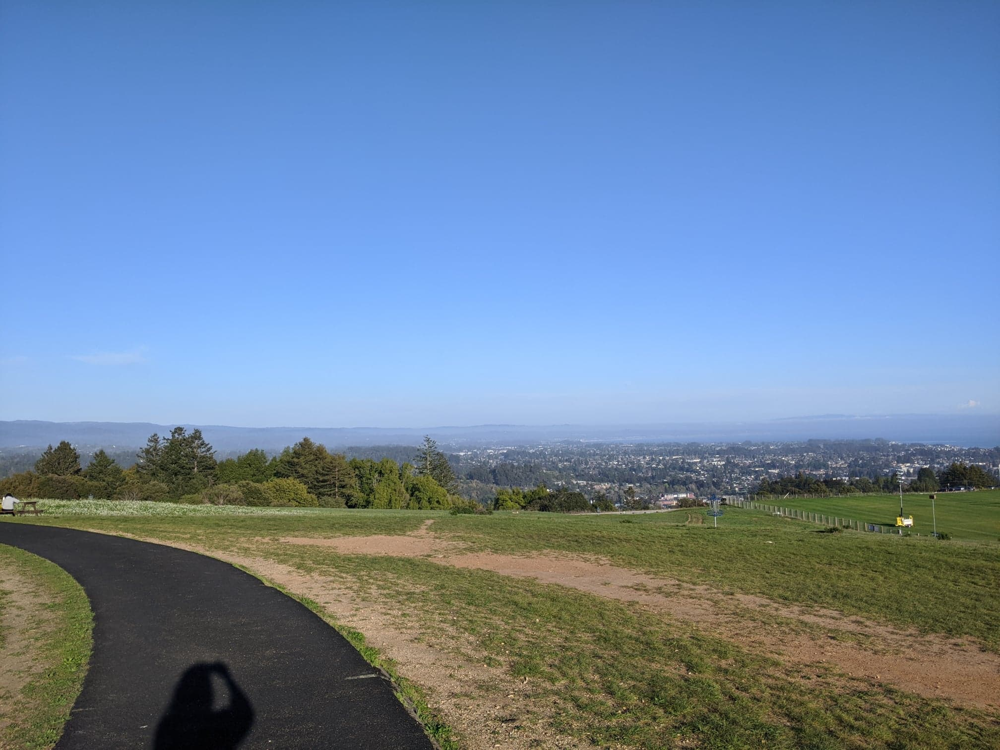

It's wild to reflect on how drastically different the outlook on this pandemic has been changing almost every week, especially out here in Texas where they are allowing 75% occupancy in many places. I'm still social distancing due to the fact that Houston and the surrounding Harris County actually ranks the 5th highest number of new daily cases in a county for the entire country!
When I, along with other PhD admittees, was faced with the decision to begin grad school just 2 months ago, I was more hopeful that obtaining a gap year UX job would be more attainable even in the current situation. Because I'm currently living in Houston, a cross-country move to start my PhD didn't seem like a smart thing to do in the middle of a pandemic. However, many universities have now announced support for remote education in the fall! I have about 2.5 years of experience doing remote learning, so even though I'd be losing out on the orientation into PhD life, my cohort and I could go through it together.
Many aspects of our lives are different now. Because of this, I'm still exploring potential gap year jobs, but also options to begin progress in PhD research (and possibly courses) this fall as well. My initial decision to delay my PhD was definitely based on an outlook in April that is drastically different from now in late June. Additionally, even prior to the pandemic, one of my primary motivations for a gap year was due to mental health and finances. Sadly, with the effects of the pandemic we can see right now, there isn't much of a difference now on mental stress with starting a PhD remotely than finding a good-paying temporary job...
We'll see how this all plays out! But in the meantime, I'm still optimistic and looking forward to spending this summer learning more about Computer-Supported Collaborative Learning in my last Research Capstone through DePaul's Learning and Human-Centered Computing (LHCC) Group.
Because I'm finished with my master's requirements at the end of the summer, I participated in our DePaul online virtual commencement last week which was still fun to watch with my loved ones. Here's my diploma cover and tassel that I received in the mail =)
Hang in there, everyone!
As most people know by now, job search in COVID-19 times, even in the tech industry, is definitely pretty rough... In the meantime, doing my best to balance my master's Prototyping class with job search efforts and staying current with our weekly virtual ALT Games Lab meetings at UC Santa Cruz! I've also been trying to refresh on basic stats concepts with a Coursera class. To keep my brain working, I've been presenting games research papers in the lab meetings. I've read the following so far related to mixed reality (MR) and tangibles:
- Speicher et al. (2019). “What is Mixed Reality?”
- Ferrer et al. (2014). “How Does Usability Impact Motivation in Augmented Reality Serious Games for Education?”
- Ishii , H. (2008). “Tangible Bits: Beyond Pixels”
- (currently reading) Moreno, R. & Mayer, R. (2005). “Role of Guidance, Reflection, and Interactivity in an Agent-Based Multimedia Game”

It should be interesting to see how the rest of the year rolls out with quarantine. Just trying to stay mildly optimistic and healthy!
I haven't written anything down here in so long, because so much has happened right after the other! With things slowing down some -- especially with everyone being in quarantine due to COVID-19 -- it's prime time for reflection on my path so far.
So, a breakdown of news:
1. I delayed my entry into the PhD Computational Media program at UC Santa Cruz.
Firstly, I feel incredibly fortunate that I was even given the opportunity to be a part of my dream academic department this upcoming fall. I just want to write about this a bit in case someone trying to make a similar decision ever reads it. Lots of factors came into making this decision. I was already debating delaying further grad school before COVID-19 escalated, because it was strongly suggested by many (most, really) of my loved ones and friends.
From kindergarten to 3 years of working through my master's, I've been in an academic environment for 20 years. I obviously love school and learning. I'm the type of person to charge ahead in life without looking back too much. However, as I'm getting older (turning 26 this year), I'm becoming more aware of the dangers of an "early" burnout. I always want to be in a position where I feel healthy and competent enough to keep moving through every stage in life. As much as I want to finish school earlier and really dive into UX and games research, I now know that I need to take this time to pause, especially with all of the turmoil going on in our world at the moment. When all of this blows over, I can't wait to charge ahead again.
Until then, look at this amazing view I captured from UCSC overlooking the Bay!

2. I now have three publications!
They're listed underneath "Publications" in my Résumé page. I feel lucky to see those listings as fruits of my labor being involved in the two research projects in DePaul University and UC Santa Cruz. It's unreal to see that my book chapter with Professor Melcer (Eddie) is about to be published through Springer! Though of course, I'm disappointed that CHI 2020 in Honolulu, Hawaii was cancelled (especially as it would've been my first CHI). I look forward to what more could happen in the future. It's surreal to see my name in the ACM Digital Library and have listings on Google Scholar and ResearchGate and all of that jazz. I'm excited about the beginning of my journey.
3. I'm finishing up my master's degree and job searching.
I'm looking for any job where I can use any of the skill sets that I've obtained from school -- UX research, design, data analysis, and coding. Though I've been in an academic environment for a while, I realize that I have a lot of knowledge that has a place in industry. It is definitely a bit tough right now, because most companies have frozen hiring, but I'm trying to stay optimistic for when things become "normal" again. While I'm doing all of that, I'm taking my last HCI classes in Prototyping and Implementation this spring and then the comprehensive Capstone component for my program in the summer. As I'm refreshing on concepts I've learned to prepare for the workforce, I might make time to write about things I'm learning or projects I'm working on here.
Overall, I'm taking this time to work on staying healthy mentally, emotionally, and physically while we're all going through this rough transition into living in a pandemic. When you're taking breaks (which you should), make time to play some games, listen to good music, or just put a good movie/show on. Hopefully you're all trying to do the same and staying safe!
It's been exactly half a year since I last made efforts to write something here. Six months ago, I never would've imagined that I'd be at where I am now! People close to me know that my grad school journey hasn't been smooth-sailing. I feel incredibly grateful to those who encouraged me to do DePaul's HCI program. I've been taking full advantage of its flexibility, having experienced being both a remote and in-person student.
Making the decision to be in Chicago and focus the past quarter on video games has been life-changing, and I managed to finish it with a 4.0. I feel incredibly lucky to be involved in two research projects right now. I feel more motivated more than ever to continue on this path to gaining experience in the UX/UR field.
Just quickly jotting down thoughts:
* Decided to be responsible and only take 2 grad classes this quarter -- UX Research Methods and Usability Evaluation Methods
* I am learning a lot everyday. It has been one deadline after the other!
* I don't have much time right now to devote to improving this website, but I'll do the best that I can this quarter! Hoping to take a Games UR course next quarter in Chicago, IL. Really trying to take the knowledge in to prepare for it.
* I really want to start making a basic game soon.
My website is live! It's nowhere near the state I wanted it to be at, but time is ticking while I'm at school and I wanted to make progress. I added to the Projects page. It's still not window-resizeable or mobile-friendly, so I'm hoping to make progress on that relatively soon. Keeping the design and aesthetics simple (Blue-Orange is accessible!)
In the meantime, the semester is winding down and preparing for end-of-term projects and papers for my classes: Interaction Design, Database Management Systems (SQL), and Management Information Systems. Looking forward to the end and taking a trip back to the Bay Area for the holidays. Go Warriors.
It's 2:41am EST and this is my first entry. As a grad student, I tend to worry about time management a lot. I've always wanted to write about my experiences as a student, but I thought that I should strictly devote my time to coding or studying. However, I also believe self-reflection is valuable and can be motivating. I'm hoping that this entry will jumpstart my journey to creating a home for my thoughts primarily about computing, student life, games, and social issues involving tech.
Right now, I'm typing this through Sublime, as I'm not planning on making my website go live yet until I've included more content. I just wanted to jot my thoughts down, because I'm really excited about the future! Though, it's weird to think that these thoughts won't be posted until later. Going to find as much time as possible to squeeze in finishing my website between learning SQL, reading/writing papers, and UX assignments for my grad courses.